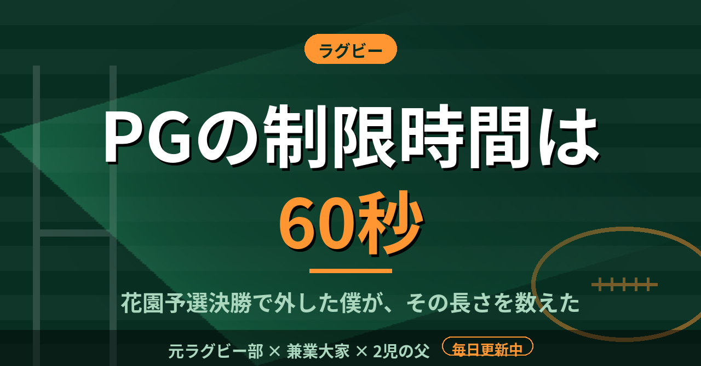
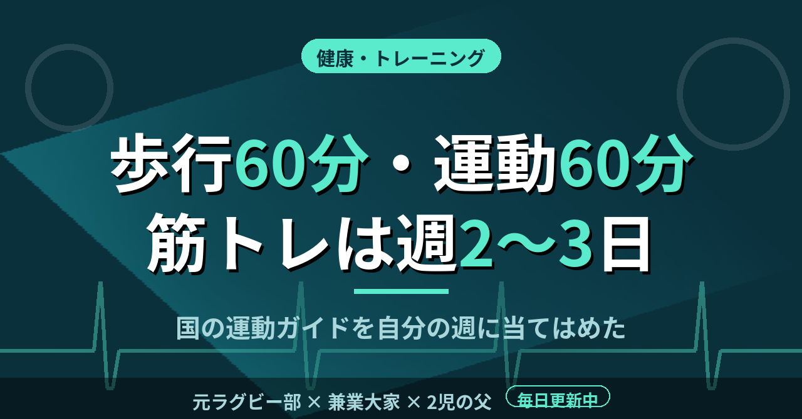
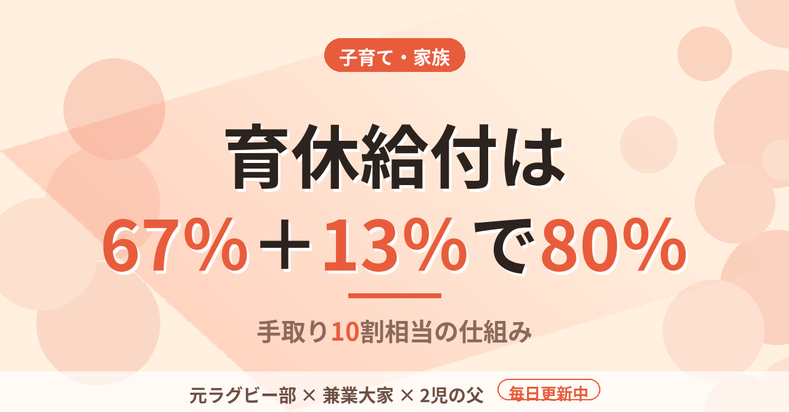
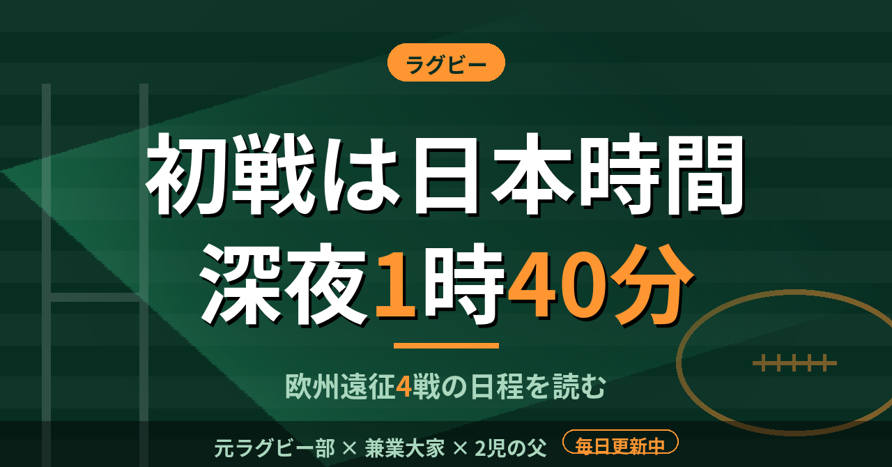

hohemaro15
ラグビー20年、不動産1棟。調べてから書く記録
このサイトについて
小学5年でラグビーを始めて、大学まで20年続けた。大阪の激戦区で6年、同志社大で4年。ポジションはユーティリティバックス。
今はメーカーで設備の電気を担当しながら、兵庫県尼崎市に木造9戸の一棟アパートを運用している。2児の父。
経験談だけで終わらせないために、書く前に必ず制度と統計を調べることにしている。数字が確認できなかった話は書かない。
書いていること
ラグビー
小5から大学まで20年。大阪の激戦区で見たこと、カテゴリが上がるたびに起きたこと。
不動産・資産運用
2016年に検討を始めて2026年に1棟目。判断基準と、断り続けた10年の話。
健康・トレーニング
増量の失敗と成功、サプリで肝臓の数値を悪くした経験、続けている設計。
子育て・家族
2歳と0歳を育てながらの時間の使い方と、資産形成の時間軸。
最近の記事
-
不動産・資産運用
尼崎市は人口2,431人減、世帯は8,299増。1世帯1.99人の街の1LDK
1棟目を買うとき、尼崎市の世帯数までは見ていなかった。2025年の国勢調査の兵庫県集計が出ていたので、人口と世帯数を並べて読み直した。…
-

ラグビーPGの制限時間は60秒。花園予選決勝でPGを外した僕が、その長さを数えた
高3の花園予選は、決勝で敗れた。そこまで難しくないPGを自分が外した試合だ。ボールを置く前の景色まで、今も覚えている。けれど、あのとき何秒かけて蹴ったのかは、まったく覚えていない。いまの競技規則には、その時間に決まった数…
-

健康・トレーニング歩行60分、運動60分、筋トレ週2〜3日。国の運動ガイドを僕の週に当てはめた
部活の頃は、練習の量も筋トレの量も、監督とトレーナーが決めていた。社会人になって誰にも決められなくなってから、自分の週の運動が足りているのか、基準と照らしたことがなかった。厚生労働省の「健康づくりのための身体活動・運動ガ…
-

子育て・家族育休給付は67％に13％が上乗せされ80％。手取り10割相当の仕組みを父が読んだ
育休を取るとき、一番気になったのはお金だった。給料が止まる期間を、制度がどこまで埋めてくれるのか。厚生労働省の資料で、その仕組みを読み直した。…
-
 不動産・資産運用
不動産・資産運用
金利1％の差で月返済は約2.6万円。日銀の1.25％据え置きを大家候補が読んだ
2棟目を探していると、物件の数字より先に金利の話になることが増えた。10月30日の日銀会合の結果が出たので、何が決まり、返済額にどう響くのかを数字で確かめた。…
-

ラグビーラグビー日本代表の欧州遠征は4戦。初戦のキックオフは日本時間の深夜1時40分
日本代表の欧州遠征が始まる。元ラグビー部の僕は、いつ試合があるのかを一度きちんと確かめたくなり、日本ラグビーフットボール協会の発表を読んだ。…